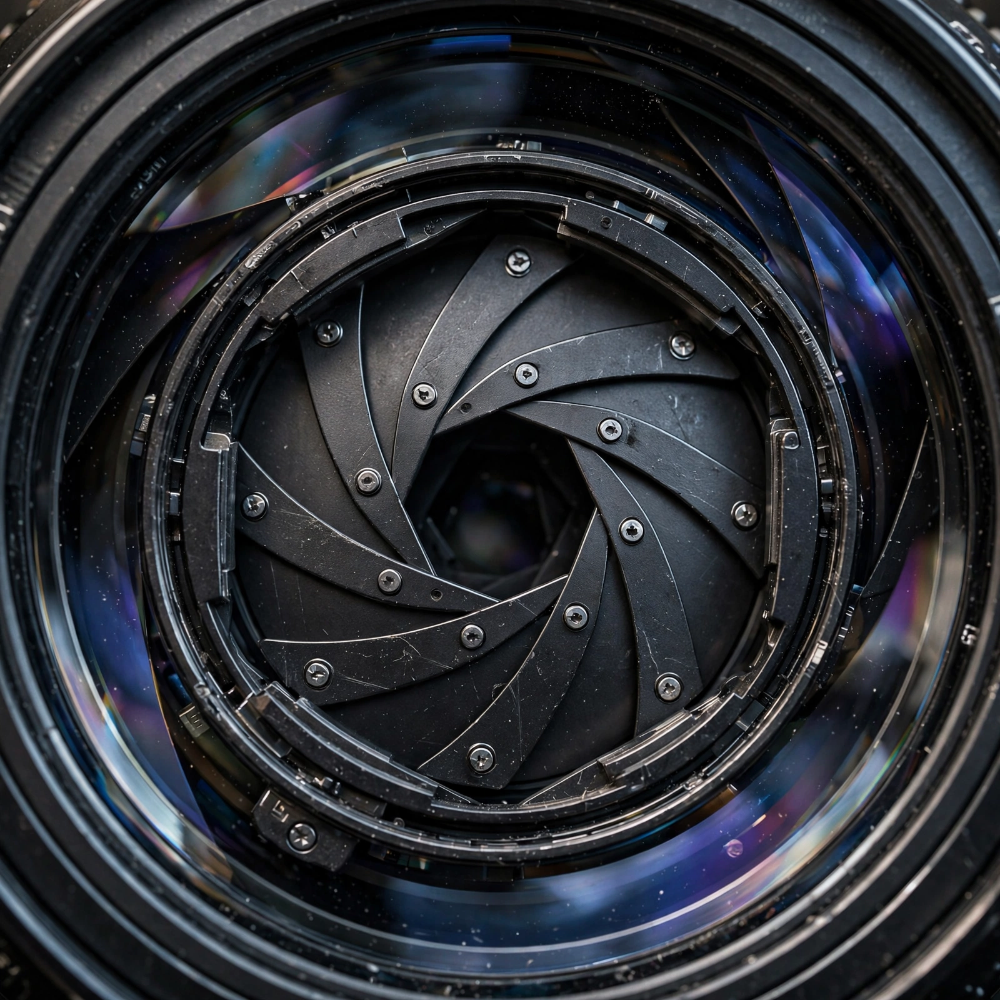

In optics, the aperture of an optical system (including a system consisting of a single lens) is a hole or an opening that primarily limits light propagated through the system. More specifically, the entrance pupil as the front side image of the aperture and physical aperture as the system aperture, in that the image-forming capacity of the optical system after the entrance pupil is determined by the visible degree of angularity as the light propagates down a determinately known path and the image-forming result of the cornea of the eye. It also restricts how much of the scene facing an imaging system (a camera) will be seen; larger apertures allow more of the scene to be seen, while small apertures display the image in a more confined view.

The word aperture is also used in other contexts to indicate a system which blocks off light outside a certain region. In astronomy, for example, a photometric aperture around a star usually corresponds to a circular window around the image of a star within which the light intensity is assumed.
The aperture stop of a photographic lens can be adjusted to control the amount of light reaching the film or image sensor. In combination with variation of shutter speed, the aperture size will regulate the film's or image sensor's degree of exposure to light. Typically, a fast shutter will require a wide aperture to assure sufficient light exposure, while a slow shutter will require a narrow aperture to avoid excessive exposure.
A device called a diaphragm usually serves as the aperture stop and controls the aperture. Like the pupil of an eye, the diaphragm contracts and expands to control the amount of light entering. Apertures are also used in microscopy and telescopes.
The size of the aperture is usually expressed as an f-number, the ratio of the focal length of the lens to the diameter of the entrance pupil. Standard f-numbers follow a geometric sequence: f/1.4, f/2, f/2.8, f/4, f/5.6, f/8, f/11, f/16, f/22, each step halving the light admitted. A wide aperture (small f-number) produces a shallow depth of field, while a narrow aperture (large f-number) brings more of the scene into focus.
Aperture control is fundamental in photography, cinematography, microscopy, telescopes, and the optics of the human eye, where the iris acts as a variable aperture. The numerical aperture characterizes the range of angles over which an optical system can accept or emit light.